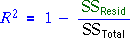
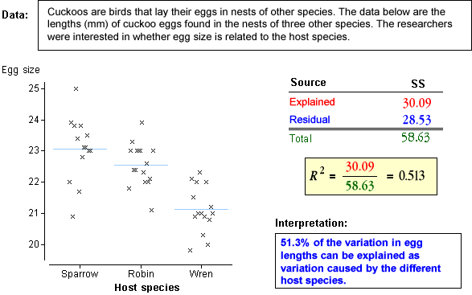

Coefficient of determination, R2
As in all other GLMs, the coefficient of determination describes the proportion of the overall response variability that is explained by the model.

Since the total sum of squares equals the explained plus residual sums of squares, R2 can also be interpreted as one minus the proportion of variation that is unexplained by the model,

In the context of our model for g groups,
The coefficient of determination describes the proportion of response variation that is explained by differences between the group means.
Examples
The diagram below shows how R2 is calculated and interpreted for a few data sets.
